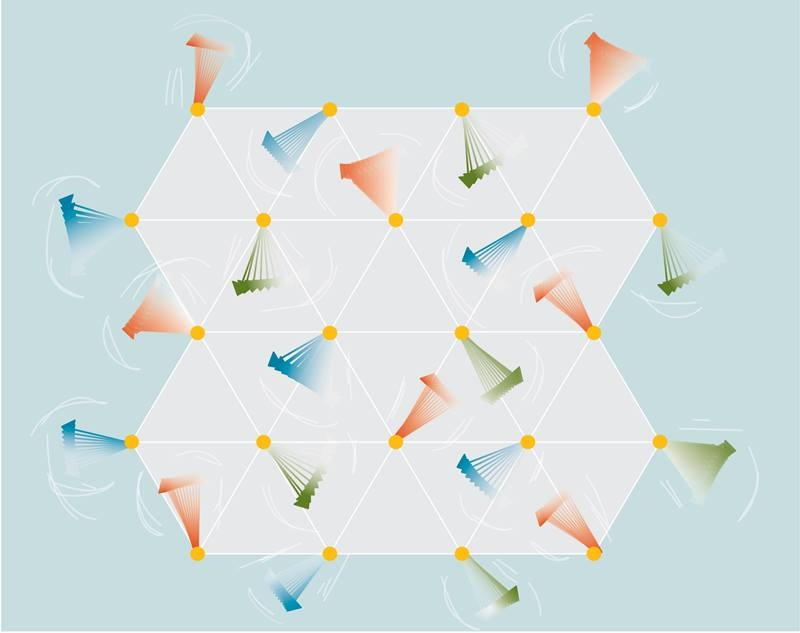
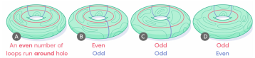

Emergence of a monopole phase in the J1-J2 Heisenberg model on the triangular lattice for small magnetic fields
Magnetic field induced phenomena in Kitaev spin liquids
Triangular J1-J2 Heisenberg antiferromagnet in a magnetic field
FFT-accelerated auxiliary variable MCMC for fermionic lattice models: a determinant-free approach with O(N logN) complexity
Transient localization from fractionalization: vanishingly small energy conductivity in gapless quantum magnets
Physical Review B 114, 034423 (2026, Editor's Suggestion) [arxiv:2509.07062]
Finite spinon density-of-states in triangular-lattice delafossite TlYbSe2
Obstruction to broken symmetries in topological flat bands
Emergent quantum Majorana metal from a chiral quantum spin liquid
Fractionalization signatures in the dynamics of quantum spin liquids
Physical Review B 111, L100402 (2025, Editor's Suggestion) [arxiv:2403.12141]
Spin-orbit coupling controlled two-dimensional magnetism in chromium trihalides
Hidden subsystem symmetry protected states in competing topological orders
Dimensional reduction of Kitaev spin liquid at quantum criticality
Physical Review Research. 6, 013298 (2024) [arxiv:2308.08116]
Machine learning reveals features of spinon Fermi surface
A statistical approach to topological entanglement: Boltzmann machine representation of higher-order irreducible correlation
Anyon dynamics in field-driven phases of the anisotropic Kitaev model
Detection of long-range entanglement in gapped quantum spin liquids by local measurements
Gapless to gapless phase transitions in quantum spin chains
Magnetic phase transitions in quantum spin-orbital liquids
Film-depth-dependent crystallinity for light transmission and charge transport in semitransparent organic solar cells
Rapidly measuring charge carrier mobility of organic semiconductor films upon a point-contact four-probes Method
IEEE Journal of the Electron Devices Society 7, 303-308 (2019)
Film-depth-dependent light absorption and charge transport for polymer electronics: A Case Study on Semiconductor/Insulator Blends by Plasma Etching
Quantum Spin Liquids
Beyond solids, liquids and gas, there are numerous quantum phases of mater which lie beyond classic symmetry-breaking paradigm. Quantum spin liquids (QSLs) being among them. QSLs are exotic phases of matter that can show up in some frustrated magnetic (or qubit) systems characterized by a lack of long-range magnetic order down to extremely low temperatures (unlike with conventional magnets) due to strong quantum fluctuations.

In addition to this negative definition, QSLs are also characterized by some global invariant, known as topological entanglement, emergent abelian or non-abelian quasi-particles with fractionalized statistics, and ground state degeneracy connected with emergent gauge theories.
